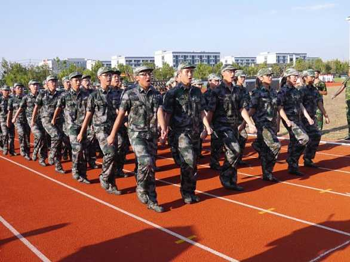

军训目的
军训的目的是通过严格的军事训练提高学生的政治觉悟，激发爱国热情，发扬革命英雄主义精神，培养艰苦奋斗，刻苦耐劳的坚强毅力和集体主义精神，增强国防观念和组织纪律性，养成良好的学风和生活作风，掌握基本军事知识和技能。

军训内容
队列训练的实施程序和方法：通常是先讲解，后操练；先分解，后连贯；先单个动作，后分队动作。讲解与示范相结合，逐个动作地教练。为检验和提高部队、分队的队列训练质量，还可采取竞赛、会操、阅兵的方法进行。注重教养与学用一致，强调在日常生活、训练和执勤中养成优良的作风。
军训意义
军训，是新学期的第一课。军训的目的是：增强国防意识与集体主义观念，深刻领悟“立德、立学、立行、立新”的真正含义；培养团结互助的作风，增强集体凝聚力与战斗力。军训，还能提高生活自理能力，培养思想上的自立和独立，还能帮助我们养成严格自律的良好习惯。